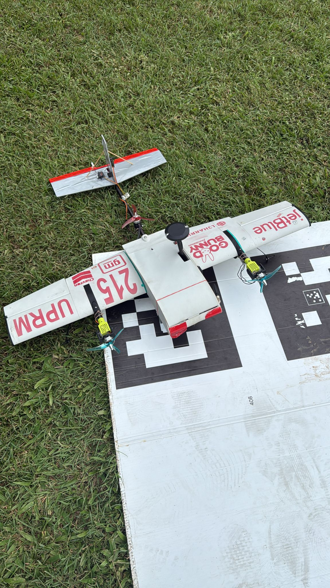
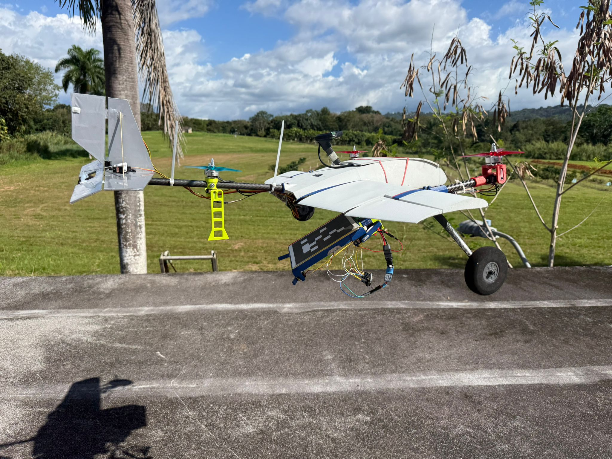
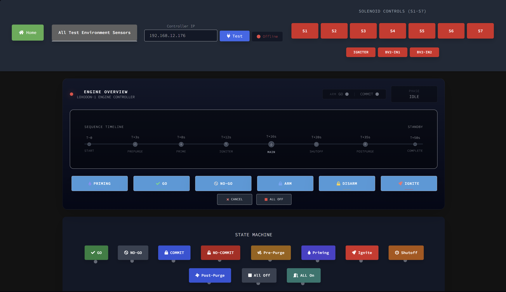
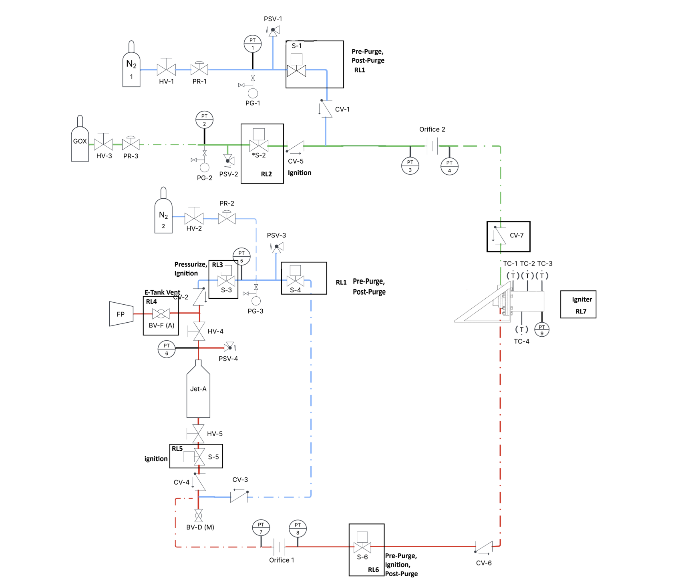

I'm a dual-degree student at the University of Puerto Rico, Mayagüez, studying Software Engineering and Electrical Engineering with a focus in Control Systems — graduating May 2027.
I've built GNSS navigation models at Blue Origin, working on GN&C software problems where accuracy, timing, and clean interfaces are non-negotiable. At the U.S. Department of Energy, I supported validation of nuclear hybrid energy systems through system-level testing and Hardware-in-the-Loop verification.
At UPRM, I lead engineering efforts in flight projects. On the SAE UPRM Aero Design Team, I work on autonomous missions, PID tuning, and onboard electronics. As Lead Avionics Engineer for LOXODON-1 — Puerto Rico's student liquid rocket engine — I own the full embedded control and telemetry stack, from sensors and data pipelines to ground software and test operations.
The thread through it all: GN&C-adjacent work at the intersection of estimation, control, embedded software, and real hardware.
Blue Origin
U.S. Department of Energy (DOE)
University of New Mexico (UNM) CHRES · DOE Fellowship
Economic & Business Development Center
SAE UPRM Aero-Design


Liquid Propulsion Team · LOXODON-1


NASA L'SPACE Mission Concept Academy
IEEE UPRM Branch
SEMPACT
Avionics guidance system design and SIL simulation in MATLAB/Simulink and FlightGear. Implemented LQR control and Kalman filtering for flight stability and state estimation.
6-DOF flight simulation built with Python and interfaced with FlightGear for real-time visualization of aircraft flight dynamics and control responses.
Conversational chatbot built with neural networks, capable of understanding and generating context-aware responses through deep learning and NLP techniques.
Real-time face detection and recognition system using machine learning and computer vision for live identity identification from a video feed.
Autonomous vehicle simulation using AI and reinforcement learning, training a car to navigate environments and make driving decisions without human input.
Text generation model using Recurrent Neural Networks trained to learn sequence patterns and produce coherent text output from a given prompt or seed.
Network packet tracking tool using Python and Wireshark to capture and analyze traffic, with geolocation data visualized on Google Maps.
Controlled phishing simulation using Gophish to test organizational security awareness, track campaign results, and identify social engineering vulnerabilities.